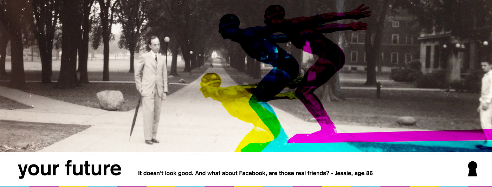
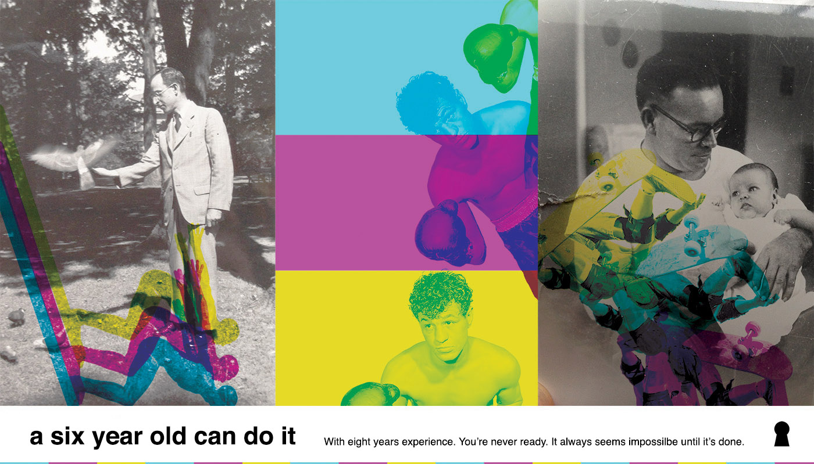
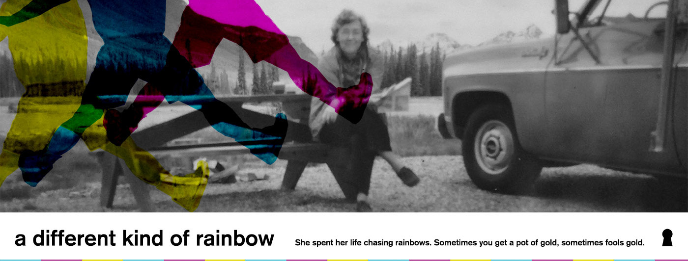
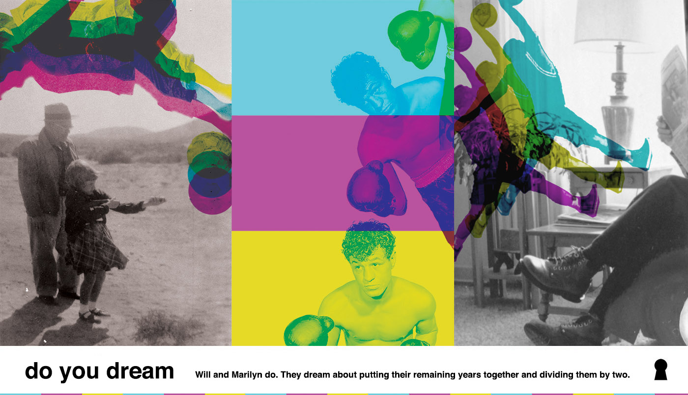
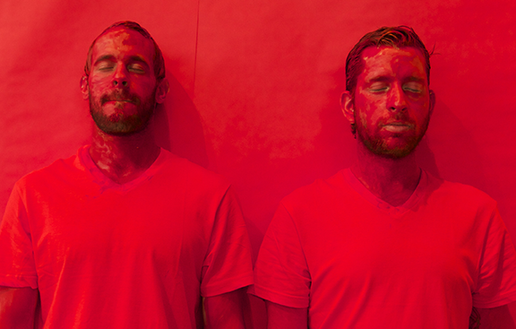

be vintage.
A simple and easy fitness plan that will help you live a long and fruitful life

HOW IT WORKS
Balance is the key
Our plan has a variety of exercises that focus on your inner balance. Learn about Tai Chi, balance boards and chair stretches.
No diet nonsense
Nutritionists keep on discovering new things: we heard it's ok to eat butter. Listen to your body - you know what's right.
Time honored experts
We only work with the most experienced life experts to provide you with the best advice that will help you live a fruitful life.

TIPS FROM OUR EXPERTS
The No Nonsense Diet
Finding Your Inner Balance
How to achieve your dreams
The Relationship Cure

SIGN UP NOW & START "BEING VINTAGE"
Find an octogenarian and ask them (one or all of the following questions)
- What's your secret? (listen to a response)
- What did you dream about when you were my age? What do you dream about now?
- What's your favorite joke?
- Tell me about something you are proud of accomplishing in your life.
- What advice do you have for someone else trying to accomplish their own goals?
Volunteer your time with one of our experts
- Sign up to volunteer at Horizon House, a continuing care retirement community in First Hill Seattle offering retirement living, long-term care, and nursing care.
- Sign up to volunteer at Hilltop House, an activity-based retirement community in First Hill Seattle providing affordable housing to low-income individuals 62 or older.
- Use Volunteer Match to find a volunteer opportunity with seniors in Seattle

ABOUT "BE VINTAGE"
Project description
Be Vintage is a series of advertisements for a fitness plan based on interviews with octogenarians living in First Hill. The interviewees were asked about advice for younger generations concerning exercise, diet, and love. The advertisements consist of seven outdoor banners on light poles, two large horizontal banners, a trifold brochure, and this website (http://bevintage.org) containing the interviews and volunteer opportunities with seniors in the neighborhood. The goal of the project is to raise awareness of the complex culture and life experiences embodied in the First Hill community, to encourage people to have more conversations with elders, and to provide points of contact for potential volunteers to get involved with senior services and retirement centers.
Advertisement locations
From August to October 2014, advertisements will be displayed at all the following locations:
- 1. Light pole banners at the Washington State Convention Center Plaza
- 2. Bench advertisements in Freeway Park
- 3. Trifold brochures at cafes, museums, and hospitals in and around First Hill, Seattle.
Meet the artists

Sam Wildman and Eric Olson are artists living in Seattle who first came together through a mutual love of Sam's mother.